11 Balanced Binary Search Tree
11.1 Balanced Tree
Introduction
Balance may be defined by:
- Comparing the numbers of nodes of the two subtrees
- Height balancing: comparing the heights of the twosub trees
- Null-path-length balancing: comparing the null-path-length of each of the two sub-trees
- Weight balancing: comparing the number of null sub-trees in each of the two sub trees
A binary tree is balanced if the difference in the numbers of nodes of both subtrees of any node in the tree either zero or one.
A binary tree is height-balanced if the difference in height of both subtrees of any node in the tree either zero or one.
- A complete binary tree is is height-balanced
Rotations
Rotations
- A rotation allows us to interchange the role of the root and one of the root’s children in a tree while still preserving the BST ordering among the keys in the nodes.
- There are two kinds of rotations: right rotation and left rotation
Right rotation
A right rotation involves the root and the left child. The rotation puts the root on the right, essentially reversing the direction of the left link of the root:
- Before the rotation, it points from the root to the left child
- After the rotation, it points from the old left child (the new root) to the old root (the right child of the new root)
Example

- Make right rotation at 15
Implementation
void rightRotate(link& h) {
link x = h->left;
h->left = x->right;
x->right = h;
h = x;
}Left rotation
A left rotation involves the root and the right child.
Implementation
void leftRotate(link& h) {
link x = h->right;
h->right = x->left;
x->left = h;
h = x;
}Strategies in Balancing Tree
Strategies in Balancing Tree
- Global rebalancing: an approach to producing better balance in BSTs is periodically to rebalance them explicitly.
- costs at least linear time in the size of the tree
- Local rebalancing: balancing BSTs after each operation (insert, delete)
DSW algorithm
The algorithm was proposed by Colin Day and later improved by Quentin F. Stout and Bette L. Warren. Idea of algorithm:
- Transform an arbitrary BST into a linked-list-like-tree called backbone or vine by rotations
- Transform this tree into a perfectly balanced tree by rotations
function CreateBackbone(root)
p ← root
while p ≠ null
if p has a left chid
make right rotation at p
else
p ← p->rightfunction CreateCompleteTree(root)
n ← the number of nodes
m ← 2^(floor(log_2(n+1))) - 1
make n-m left rotations starting from the top of backbone
while (m>1)
m ← m/2
make m left rotations starting from the top of backboneIllustration
BST

Backbone
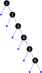Perfect
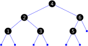
11.2 AVL Tree
AVL Tree
AVL tree
- proposed by two Soviet scientists G. M. Adelson-Velskii and E. M. Landis
- is BST tree which is height-balanced
\forall p:\left|\boldsymbol{height}(\boldsymbol{LeftSubtree}(p))-\boldsymbol{height}(\boldsymbol{RightSubtree}(p))\right|\le1
The Height of an AVL Tree
Consider the worst case,
To determine the maximum height that an AVL tree with N nodes can have, we can instead ask what is the minimum number of nodes that an AVL tree of height h can have (called AVL tree F_{h}).
We have the recurrence relation
|F_{h}|=|F_{h-1}|+|F_{h-2}|+1 where |F_{0}|=1 and |F_{1}|=2
Solve the equation, we have
|F_{h}|+1\approx\frac{1}{\sqrt{5}}\left[\frac{1+\sqrt{5}}{2}\right]^{h+2}
The height of an AVL tree in the worst case
h\approx1.44\log_{2}|F_{h}|=1.44\log_{2}N
Rebalancing technique
After an insertion/deletion, we may find a node whose new balance violates the AVL condition.
Four cases: LL imbalance, LR imbalance, RR imbalance, RL imbalance
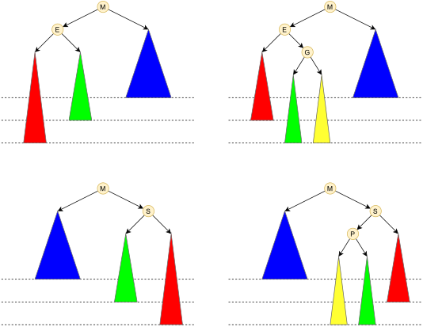Case LL imbalance is corrected by executing a single right rotation at the node with the imbalance.
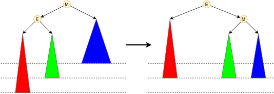Case LR imbalance is corrected by executing a double rotations
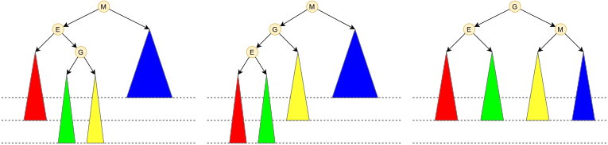
Insertion
function Insert(root,key)
if root = null
root ← new NODE(key)
return
if root->key = key
return
if root->key < key
Insert(root->right,key)
if root->key > key
Insert(root->left,key)
if unbalanced at root? rebalance at rootIllustration
An AVL tree

Insert node 54 into the tree \to node 78 become unbalanced
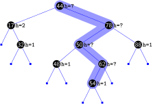Case RL imbalance \to rebalance by making double rotations
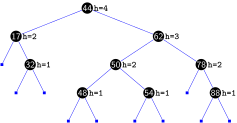
Deletion
Illustration
An AVL tree
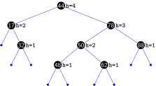Delete node 32 from the tree \to node 44 become unbalanced
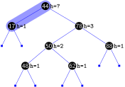Case RL imbalance \to rebalance by making double rotations
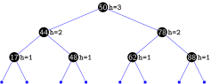
11.3 Red-Black Tree
Red-Black Tree
A red–black (RB) tree is a special type of binary search tree that must statsify
- Each node is either red or black.
- The root is black. (sometimes omitted)
- If a node is red, then both its children are black.
- Every path from a given node to any of its descendant null link has the same number of black nodes (balance criteria).
A left-leaning red–black (LLRB) tree (leveraging Andersson’s idea AA tree) is a variant of the red–black tree that has only left red children
Example
A red–black tree
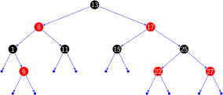A left-leaning red–black tree
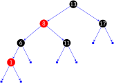AA tree
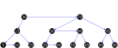
The Height of a RB Tree
The height of a red-black BST with N nodes is no more than 2\log_{2}N. It means that the height of an RB tree in the worst case
h\leq2\log_{2}N
Operations
Case 1: Left rotation to orient a right red node to left red node.
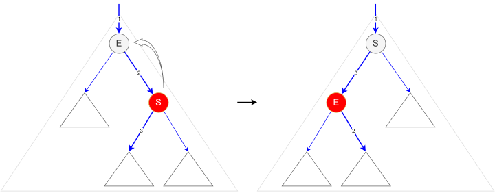Case 2: Right rotation.
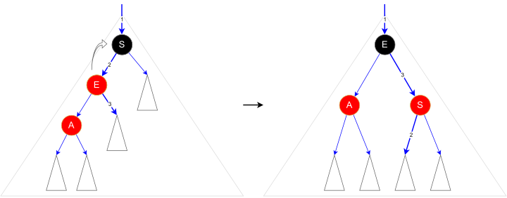Case 3: Color flip.
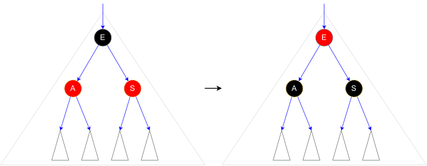
Insertion
Insertion
function Insert(root,key)
if root = null
root ← new NODE(key)
return
if root->key = key
return
if root->key < key
Insert(root->right,key)
if root->key > key
Insert(root->left,key)
if IsRed(root->right) and not IsRed(root->left) RotateLeft(root)
if IsRed(root->left) and IsRed(root->left->left) RotateRight(root)
if IsRed(root->left) and IsRed(root->right) FlipColors(root)Example
- Typical left-leaning red-black BST built from random keys
Illustration
A left-leaning red–black tree

Insert node 7 into the tree
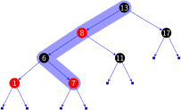Flip color at 6 into the tree
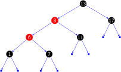Right rotation at 13 into the tree
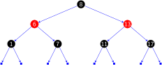Flip color at root and change root to black color
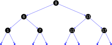
Deletion
Cost summary for symbol-table implementations
| implementation | search (worst) | insert (worst) | remove (worst) | search hit (avg) | insert (avg) | remove (avg) | key |
|---|---|---|---|---|---|---|---|
| unordered list | N | 1 | N | N/2 | 1 | N/2 | equal |
| ordered list | N | N | N | N/2 | N/2 | N/2 | compare |
| ordered array | \log_{2}N | N | N | \log_{2}N | N/2 | N/2 | compare |
| BST | N | N | N | c\log_{2}N | c\log_{2}N | \sqrt{N} | compare |
| AVL | c_{a}\log_{2}N | - | - | \log_{2}N | - | - | compare |
| RB | c_{r}\log_{2}N | - | - | \log_{2}N | - | - | compare |
| goal? |
Note: c=1.39,c_{a}=1.44,c_{r}=2.0
11.4 Optimal binary search trees
Introduction
An optimal binary search tree (optimal BST), sometimes called a weight-balanced binary tree, is a binary search tree which provides the smallest possible search time (or expected search time) for a given sequence of accesses (or access probabilities)
- Optimal BSTs are generally divided into two types: static and dynamic
- In the static optimality problem, the tree cannot be modified after it has been constructed.
- In the dynamic optimality problem, the tree can be modified at any time, typically by permitting tree rotations.
Static
Introduction
- Suppose that we are designing a binary search tree for a program to translate text from English to Vietnamese, we want words that occur frequently in the text to be placed nearer the root.
Problem
Given a sequence of of n distinct keys in sorted order (k_{1}<k_{2}<\\\cdots<k_{n}) and their frequencies \mathcal{D}
| key | k_{1} | k_{2} | … | k_{n} |
|---|---|---|---|---|
| frequency | f_{1} | f_{2} | f_{n} |
Search Cost
- Cost of search for key k_{i} \text{Cost}(k_{i})=\text{Depth}(k_{i}) where \text{Depth}(root)=1
- Denote \text{ExpectCost}(l,r) be expected cost of search for a BST tree containing \{k_{l},...,k_{r}\} given \mathcal{D}
\text{ExpectCost}(l,r) =\sum_{i=l}^{r}\text{Cost}(k_{i})f_{i}
- Compute the expected cost for the following binary search tree given \mathcal{D}
| key | k_{1} | k_{2} | k_{3} | k_{4} | k_{5} | k_{6} |
|---|---|---|---|---|---|---|
| frequency | 0.1 | 0.2 | 0.1 | 0.3 | 0.2 | 0.1 |
Optimal Search Cost
- Denote \text{OptimalCost}(l,r) be optimal cost of search for a BST tree T containing \{k_{l},...,k_{r}\} given \mathcal{D}
- Denote \text{OptimalCost}(l,m,r) be optimal cost of search for a BST tree T containing \{k_{l},...,k_{r}\} and k_{m} be the root node given \mathcal{D}
- We have
\begin{align*} \text{OptimalCost}(l,m,r) = \sum_{i=l}^{r}f_{i} & + \text{OptimalCost}(l,m-1) \\ & +\text{OptimalCost}(m+1,r) \end{align*}
\text{OptimalCost}(l,r)=\min_{m\in\{l,...,r\}}\{\text{OptimalCost}(l,m,r)\}
Dynamic
Splay tree
A splay tree is a binary search tree with the additional property that recently accessed elements are quick to access again.
- All normal operations (insert, look-up) on a binary search tree are combined with one basic operation, called splaying.
- For many sequences of non-random operations, splay trees perform better than other binary search trees.
Splaying
- When a node x is accessed, a splay operation is performed on x to move it to the root.
- To perform a splay operation we carry out a sequence of splay steps, each of which moves x closer to the root.
- There are three types of splay steps, each of which has two symmetric variants:
- zig step
- zig-zig step
- zig-zag step
Zig step
Zig-zig
Zig-zag
11.5 Workshop
Quiz
- What is an AVL tree?
- What is a Red-black tree?